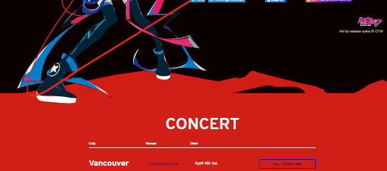

My personal website serves as a place to showcase my works and talk about myself.
Languages used: JavaScript, HTML, CSS
Libraries: freezeframe.js
Other Tools: GIT, GitHub
Period: June 2019 - July 2019 with perioidic updates

I started off by first drawing a sketch of the UI I had in mind.

Next, I implemented a very basic version of the UI with placeholder content.

I substituted the placeholder content and added more style, so the website is now starting to look like the design planned.

From then on, I continued making improvements towards the site. I created a view for larger screens. I opted for a simple black/white theme and changed the style of the navigation bar to reflect that. With most of the styling and structure of the website done, I started populating the site with more content!

As I run across new concepts, I sometimes get an idea on how I can apply that concept to what I have. While browsing the MIKU EXPO site, I was impressed with how beautiful the sites for each year looked. I found their use of the red stroke art particularlly interesting as it gave the transition from the black to red background more flare. They placed an image before the concert div element using the ::before selector.
I applied this concept to my own website.